// SECTOR 01 · BALEENDAH · 7.02°S 107.65°E
Lo belum jadi apa-apa. Gua juga.
Itu titik berangkat yang jujur.
// kacau. sadar. berubah.
Enter The Forest
// SECTOR 01 · BALEENDAH · 7.02°S 107.65°E
Lo belum jadi apa-apa. Gua juga.
Itu titik berangkat yang jujur.
// kacau. sadar. berubah.
// SECTOR 02 · ARTEFAK
Bahan yang menyamar.
dengan logo bukti anda orang gila yang sadar.
// CHAPTER I
Kejujuran dari orang yang belum jadi apa apa.
Dalam bahasa sunda capruk itu ucapan ngaco.
Tapi enstain, elon musk, bahkan rosul...
Di cap orang yang omonganya tidak masuk akal.
Tapi lihat mereka...
Yang mereka ucapkan semua jadi kenyataan.
Mereka sama dengan kita.
Mereka manusia.
Mereka bernafas.
Mereka bernyawa.
Lalu kenapa kita tidak coba bergerak sedikit.?
Dengan sadar bahwa kita manusia.
Menggunakan rumus CAPRUX.
"ubahlah sudut pandang hidup ini dengan sudut pandang kita sendiri jangan meminjam sudut pandang orang lain..."

// SECTOR 03 · RADIO
Mereka bukan siapa-siapa di mata dunia —
tapi punya ilmu, cerita, dan tangan yang bisa diandalkan.
// SECTOR 04 · SIGNAL
Gak perlu rapi, gak perlu ada kesimpulan.
Pas lo nulis, lo ngeluarin 20% dari masalah yang lo hadepin.